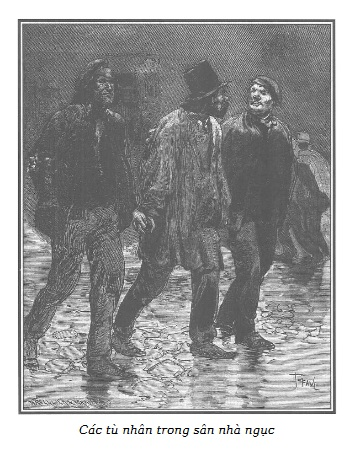
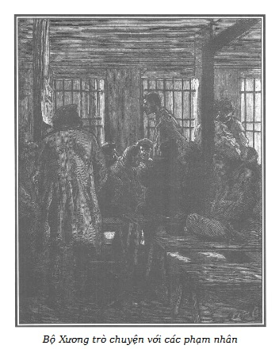

Nếu như bề ngoài vật chất của một nhà giam đồ sộ, xây dựng với tất cả các điều kiện thoải mái, vệ sinh thỏa mãn đòi hỏi của nhân loại, đã không gây cho người ta một cảm giác nào thê thảm, thì khi nhìn những tù nhân, người ta lại có những ấn tượng trái ngược hẳn.
Thông thường người ta hay cảm thấy não nề và thương hại khi đứng giữa một nhóm nữ tù bất hạnh, và nghĩ rằng những người phụ nữ này gần như luôn luôn bị thúc đẩy vào tội lỗi do ảnh hưởng độc hại của người đàn ông đầu tiên đã cám dỗ họ, hơn là do ý muốn của chính họ.
Lại nữa, ngay cả những người phụ nữ tội lỗi nặng nề nhất vẫn giữ được tận đáy lòng hai sợi dây thiêng liêng khiến cho những lay chuyển mãnh liệt nhất, những dục vọng đáng ghét nhất, điên cuồng nhất cũng chẳng bao giờ làm đứt nổi, đó là tình yêu và tình mẫu tử.
Nói đến tình yêu và tình mẫu tử, tức là nói rằng ở những con người khốn khổ ấy, vẫn còn có những luồng sáng thuần khiết và êm dịu, có thể soi sáng nơi này, nơi kia, trong bóng tối âm u của sự sa đọa nặng nề.
Nhưng ở nam giới, nhà ngục tạo ra họ và ném họ ra ngoài đời như thế nào thì họ như thế. Không có gì giống vậy cả.
Đó là tội ác thẳng thừng, đấy là một khối đồng chỉ đỏ rực lên bằng ngọn lửa dục vọng dữ dội ghê người.
Vì thế, trông thấy những kẻ gian ác đầy rẫy các nhà ngục, người ta thường rùng mình sợ hãi và ghê tởm.
Nghĩ đi nghĩ lại họ cũng đáng thương hại, nhưng thật cay đắng.
Đúng là cay đắng thật khi nghĩ rằng những cư dân hung dữ của nhà ngục và nhà “banh”… rằng mùa gặt máu me của các đao phủ… lúc nào cũng nảy mầm từ vũng bùn của dốt nát, túng quẫn và u mê.
Để hiểu cái cảm giác ghê sợ đầu tiên mà chúng tôi nói đến, xin quý vị độc giả theo chúng tôi đến Hố Sư Tử. Một trong những sân của nhà ngục La Force được gọi như vậy, ở đó thường được tập trung những tội phạm nguy hiểm nhất do tiền sử, do tàn bạo hay là do những lời buộc tội nặng nề đè lên họ.
Tuy nhiên, vì phải làm gấp nhiều công trình trong một những tòa nhà của ngục La Force nên đã bắt buộc phải tạm thời ghép vào với chúng một số phạm nhân khác.
Những người này, dù có thuộc xét xử của tòa Đại hình đi nữa, thì giá có đem so sánh họ với lũ dân quen thuộc của Hố Sư Tử, vẫn còn có thể coi họ là những người đức hạnh.
Nền trời u ám, sập sùi mưa, buồn rũ, xám xịt chiếu ánh sáng tẻ nhạt trên cảnh chúng tôi sắp tả. Chuyện xảy ra giữa một cái sân, một hình tứ giác bao la, có tường trắng bao quanh, đôi chỗ trổ cửa sổ chấn song lưới sắt.
Ở một đầu này của sân thấy một cửa nhỏ có ghi-sê, đầu kia là lối vào nhà sưởi, một phòng rộng lát đá giữa có lò sưởi lớn bằng gang, xếp ghế băng xung quanh, ở đấy, một số phạm nhân nằm ngả ngớn chuyện trò to nhỏ với nhau.

.Một số khác thích vận động hơn là nghỉ ngơi một chỗ, đi dạo trong sân, khoác tay nhau hàng ngang sít sao bốn, năm người. Phải có được bút pháp mạnh mẽ và u tối của Salvator* và Goya* để mà phác thảo ra những mẫu hình đa dạng xấu xa cả về vật chất và tinh thần, để mà diễn tả lại cái xấu xa gớm ghiếc, khác thường, muôn vẻ, trong một bộ quần áo tồi tàn mà đa số những con người bất hạnh đó thường mặc, vì chỉ là can phạm, tức là còn giả định rằng oan, họ chưa mặc đồng phục của các nhà giam trung tâm. Tuy nhiên cũng có một số loại quần áo ấy, vì khi bước vào tù, quần áo họ rách bươm quá nhớp nhúa, quá hôi thối nên sau khi tẩy uế theo thủ tục, trại đã cho mặc cái áo khoác ca đác và cái quần dạ thô màu xám của người tù..
Một nhà nghiên cứu về tướng số tất sẽ quan sát tỉ mỉ những khuôn mặt rám nắng, sạm đen, những vầng trán thấp hay hớt, những cặp mắt nhìn hung ác hay gian xảo, những cái miệng hung dữ hay ngốc nghếch, những cái gáy kếch sù. Hầu hết những nét đó đều mang những nét giống thú vật một cách đáng sợ.
Ở những nét quỷ quyệt của kẻ này, người ta nhận ra cái nhạy bén tinh tế, nham hiểm của cáo cầy, ở kẻ khác cái thâm bạo của cú diều, ở kẻ kia cái hung dữ của hổ báo, ở chỗ khác nữa, tóm lại, cái ngốc nghếch thú vật của kẻ súc sinh. Cuộc diễu hành vòng tròn của bầy người lầm lì, mắt nhìn táo bạo và thù hận, cười đùa ngạo nghễ, vô sỉ, chen chúc nhau trong cái sân bốn bề tường cao hun hút như một cái giếng vuông, cảnh ấy trông thê thảm lạ kỳ.
Nghĩ mà rùng mình khi mà lũ người hung dữ ấy có thể một lúc nào đó được thả ra lần nữa vào một thế giới đã bị chúng không ngừng tuyên chiến ráo riết.
Dưới những bề ngoài tai ác, cợt nhả và trâng tráo ấy, ấp ủ biết mấy những đe dọa trả thù đẫm máu, là những ý đồ chết chóc.
Tạm phác thảo một vài bộ mặt nổi bật của Hố Sư Tử mà gác lại những bộ mặt khác sang một bên.
Trong khi một người gác theo dõi những kẻ đi dạo, thì trong nhà sưởi diễn ra một cuộc hội ngộ bí mật.
Trong bọn tội phạm có mặt ở đấy, chúng ta gặp lại thằng Cá Trê và Nicolas Martial, nhắc lại để nhớ thôi.
Tên tỏ ra như kẻ cầm đầu và điều khiển cuộc bàn luận là một tội phạm có biệt danh Bộ Xương, đã nhiều lần được bọn nhà Martial nhắc đến trên cù lao Ravageur.

.Tên Bộ Xương là phạm nhân trưởng hoặc Đại ca ở nhà sưởi.
Hắn khá cao lớn, trạc bốn mươi tuổi, tỏ ra xứng đáng với cái biệt danh bi thảm, vì hắn gầy không thể tưởng tượng nổi, có thể gần như là đối tượng khoa Cốt-học.
Nếu bộ mặt bọn chiến hữu của Bộ Xương ít nhiều giống như mặt cọp, kền kền hay chồn cáo thì vầng trán hớt ra sau, quai hàm bẹt, dài và xương xẩu của hắn, đặt trên một cái cổ dài ngoẵng gợi nhớ hoàn toàn đến hình thù đầu một con rắn.
Đã thế, cái đầu hói trụi thùi lụi còn làm tăng thêm sự tương tự gớm ghiếc ấy, vì dưới làn da nhăn nheo, ráp rô của vầng trán dẹt như đầu rắn, thấy rõ những chỗ gồ ghề nhỏ nhất, những đường khớp nhỏ nhất của hộp sọ. Còn thì cái mặt không râu nhẵn thín trông cứ như giấy da thuộc cũ, sát đến tận xương, chỉ hơi căng ở xương gò má đến góc xương hàm dưới thấy rõ cả khớp.
Mắt nhỏ và gian xảo, quá sâu vì xương lông mày và gò má quá nhô, đến nỗi dưới vòm trán vàng ệch, có ánh sáng rọi vào, người ta chỉ thấy hai hố mắt sâu thẳm đầy bóng tối và nhìn từ hơi xa người ta chỉ thấy giữa hai cái hố đen ngòm ấy hai lỗ thủng đen làm cho cái đầu lâu đó càng thêm vẻ tang tóc. Các ổ chân răng lộ rõ dưới làn da sạm đen của quai hàm xương xẩu và bẹt, răng rõ dài, do mép luôn nhếch nên lúc nào cũng như nhe ra.
Dù rằng cơ bắp của người ấy sắt lại, gần như còn chỉ thuần là gân, hắn khỏe một cách kỳ lạ. Nhưng vẻ vạm vỡ nhất cũng khó chống lại vòng siết của đôi cánh tay dài nghêu ngao với những ngón tay dài xương xẩu. Có thể coi là sự siết chặt của một bộ xương bằng thép.
Hắn mặc một cái áo lao động quá ngắn màu lam, dường như giúp hắn khoe hai bàn tay gân guốc và một phần cẳng tay hay đúng hơn là hai xương cẳng tay (xương trụ và xương quay, mong độc giả lượng thứ cho phần giải phẫu này), hai cái xương bọc một lớp da xù xì và đen nhẻm, cách nhau bởi một rãnh sâu ngoằn ngoèo nơi nổi lên một vài đường tĩnh mạch cứng và nhăn nheo như những sợi thừng.
Khi hắn để tay trên bàn thì dường như trải ra cả một bộ đồ chơi bằng xương cừu của trẻ con chơi chuyền theo cách ví von bóng bẩy khá đúng của bác Hề Giấm.
Bộ Xương đã trải qua mười lăm năm khổ sai vì tội trộm cướp và mưu toan giết người, hắn vượt ngục và rồi lại bị bắt quả tang giết người cướp của.
Vụ mưu sát vừa rồi cực kỳ tàn ác đến nỗi, cùng với lỗi tái phạm, tên tội nhân này cũng tự biết trước thế nào hắn cũng bị kết án tử hình.
Do ảnh hưởng của Bộ Xương đối với các tội phạm khác vì sức lực, sự lì lợm và nham hiểm, nên giám đốc nhà tù giao cho hắn làm trưởng nhà sưởi, tức là hắn có trách nhiệm về những gì liên quan đến trật tự sắp xếp, vệ sinh của căn phòng và giường, ghế. Hắn thực thi nhiệm vụ hoàn hảo và chưa bao giờ các phạm nhân khác dám vi phạm luật lệ đặt ra.
Điều kỳ lạ và đầy ý nghĩa.
Những ông giám đốc trại giam vào cỡ thông minh nhất, sau khi đã thử giao chức trách nói trên cho một phạm nhân có thể tin cậy được một phần do một vài nét lương thiện hoặc do tội trạng chưa nghiêm trọng lắm, cuối cùng cũng đành phải bỏ cách lựa chọn dù sao cũng logic và hợp đạo lý này. Họ đành phải chọn tìm những kẻ tội phạm sa đọa nhất, được kiêng nể và kinh sợ nhất, vì chỉ chúng mới có tác động tích cực đến đồng bọn mà thôi. Vì thế một tội phạm càng tỏ ra vô liêm sỉ và táo tợn bao nhiêu thì càng đáng kể bấy nhiêu, và do đó càng được nể vì.
Sự việc đó được kiểm chứng qua kinh nghiệm, được thừa nhận bởi sự lựa chọn bất đắc dĩ, phải chăng là một chứng cứ không thể phủ nhận chống lại tệ nạn của chế độ giam giữ tập thể?
Điều đó chẳng phải là đã chứng minh một sự hiển nhiên tuyệt đối, cường độ của sự lây lan nguy hại chết người đến những nạn nhân đang còn có hy vọng phục hồi nhân phẩm?
Đúng thế đấy, vì cần gì phải nghĩ đến hối hận, đến cải tạo khi sống trong cái mớ hỗn loạn ấy qua nhiều năm ròng rã, có khi cả đời người, người ta thấy ảnh hưởng được kể đến đều tính bằng số lần phạm tội.
Lại một lần nữa có phải là người ta không biết rằng xã hội ngoài đời, xã hội những người lương thiện, chẳng còn tồn tại đối với người bị giam giữ hay sao?
Dửng dưng với những đạo lý vẫn chi phối xã hội, hắn tất sẽ chấp nhận những tập quán của những kẻ xung quanh. Trong tù ngục, ưu tiên đối xử dành cho những đỉnh cao của tội ác, làm hắn không khỏi lúc nào cũng hướng về cái tầng lớp thượng lưu hung dữ này.
Quay trở về với Bộ Xương, ta thấy đại ca nhà sưởi đang trò chuyện với nhiều phạm nhân khác trong đó có Cá Trê và Nicolas Martial.
– Mày có chắc chắn về những điều mày nói không? – Bộ Xương hỏi Nicolas.
– Có, có chứ! Trăm ăn một. Bố Micou biết điều đó từ thằng Thọt Lớn, mãnh này đã định thủ tiêu thằng khốn kiếp ấy mà! Vì nó đã “bán” một người nào đó.
– Vậy thì đạp vỡ mặt nó ra, cho nó hết sinh chuyện. – Cá Trê bảo. – Vừa rồi Bộ Xương đã muốn cho cái thằng cừu Germain đó một “chầu vang đỏ” đấy!
Tên đại ca rời cái tẩu đang ngậm và nói rất khẽ bằng một giọng khàn khàn vì trụy lạc, khó nghe cho rõ:
– Thằng Germain cứng cổ gây trở ngại cho chúng ta, theo dõi rình mò chúng ta, vì nó càng ít nói thì càng nghe nhiều. Phải buộc nó rời Hố Sư Tử, phải thọc huyết nó thì mới khuất mắt nó ở đây được.
– Vậy thế rồi thì sao? – Nicolas hỏi. – Thế thì có gì khác không?
– Có khác chứ! – Bộ Xương nói tiếp. – Nếu nó đã “bán” anh em như thằng Thọt Lớn bảo thì nó chạy đâu cho thoát “bữa tiết canh”.
– Hay quá! – Cá Trê nói.
Bộ Xương càng bốc hơn:
– Phải nêu một tấm gương cho chúng biết, lúc này chúng không phải là bọn cớm lùng tìm được ta, mà là bọn chó đấy. Jacques và Gauthier mới bị chém hôm kia… bị bán đó. Roussillon bị đưa đi chèo thuyền xa tít mù khơi, cũng bị bán đấy.
– Thế còn tao? Bà già tao? Và Quả Bầu? Cả anh tao ở Toulon nữa? – Nicolas gầm lên. – Chẳng phải cả nhà chúng tao bị Cánh Tay Đỏ bán tất còn gì? Giờ đây, chắc chắn là thay vì giam hắn ở đây, họ đã đưa hắn đến nhà lao Roquette. Họ không dám để hắn ở chung với chúng ta. Hắn đã cảm thấy tội của mình. Thằng khốn kiếp!
– Còn tao, – Cá Trê nói – chẳng phải là Cánh Tay Đỏ cũng bán tao đó sao?
– Và cả em nữa, – một phạm nhân trẻ với giọng nói the thé, yếu ớt rung lưỡi làm điệu, chêm vào – em đã bị Jobert phản bội, chính hắn đã rủ em cùng đi đánh quả ở phố Saint-Martin!
Nhân vật sau cùng này, với giọng nói dịu dàng, khuôn mặt nhợt nhạt, béo phị, ủy mị như con gái, mắt hay nhìn trộm, ăn mặc khác thường. Thay cho mũ, hắn trùm một cái khăn foulard màu đỏ, để thò ra hai bụm tóc màu hoe hai bên thái dương, hai đầu khăn tết nơ hồng xòe trước trán. Hắn còn quấn một cái khăn sam len mérinos trắng có hình lá cọ thêu màu lục thắt trước ngực, thay cho cà vạt, mặc áo dạ màu hạt dẻ khuất dưới thắt lưng quần may bằng vải kẻ ô vuông nhiều màu xứ Scotland.
– Chẳng phải là một điều nhục nhã à? Sao mà ăn mày đến thế? – Người có vẻ yểu điệu nói tiếp. – Không đời nào tôi nghi ngờ Jobert.
– Tao biết chắc là hắn đã tố cáo mày, Javotte ạ! – Bộ Xương có vẻ đặc biệt che chở cho phạm nhân này. – Bằng chứng là họ đã xử trí Jobert như đã làm với Cánh Tay Đỏ. Người ta có dám để Jobert ở đây đâu! Họ đã chuyển nó sang ngục Conciergerie đấy. Vậy thì không thể để thế này mãi được, phải nêu gương cho chúng thấy. Bọn chiến hữu rởm ấy làm nhiệm vụ của cớm. Chúng tưởng giữ được cái mạng chó chết của mình vì người ta cho chúng chuyển trại để lánh mặt những ai đã bị chúng bán đứng.
– Đúng quá!
– Để ngăn chặn việc phản bội, tất cả anh em chúng ta đều phải coi thằng bán chiến hữu như một tử thù. Cho là nó đã nạp Pierre hay Jacques, ở đây hay ở đâu đi nữa, cũng chẳng sao, cứ phải nhảy xổ vào mần cho được. Lúc chúng ta đã xơi được bốn, năm thằng ở các sân chơi rồi thì những đứa khác sẽ phải dè chừng, co vòi lại, chẳng còn dám nghĩ đến phản bội chúng ta.
Nicolas tán thành:
– Bộ Xương nói phải đấy, phải trừng trị thằng Germain thôi!
Thằng đại ca gật đầu.
– Nó sẽ không thoát. Nhưng hãy đợi Thọt Lớn đến đã. Khi hắn chứng tỏ được Germain là “chó” thì mọi việc sẽ ổn. Con cừu ghẻ sẽ không be be lâu hơn được nữa, sẽ cho nó tắc cổ hết kêu.
– Phải làm thế nào để che mắt bọn giám thị đây? – Javotte hỏi.
– Tao có mẹo này: dùng Hề Giấm!
– Thằng ấy nhát bỏ xừ!
– Mà lại yếu như sên!
– Đủ rồi! Tao bảo, hiện giờ thằng đó ở đâu?
– Hắn vừa mới ở khu thăm nuôi về, nhưng họ lại vừa đến gọi hắn để nhỏ to với lão chuột trạng sư.
– Thế thằng Germain vẫn đang ở khu tiếp chuyện chứ?
– Đang ở đó! Cùng với con bé đến thăm nó.
– Khi nào nó xuống đây, thì chú ý nhé. Nhưng vẫn phải chờ Hề Giấm đã, không có hắn, không xong đâu.
– Không có Hề Giấm thì sao?
– Hỏng việc!
– Sẽ tính sổ thằng Germain chứ?
– Tao nhận làm hết!
– Nhưng xơi nó bằng cái gì? Họ đã tước hết dao rồi thôi.
– Thế mấy cái kìm thép này để làm gì? Mày có muốn nó thử kẹp cổ mày không? – Bộ Xương xòe những ngón tay dài xương xẩu và rắn như thép nguội ra, trả lời.
– Thế đại ca bóp chết nó à?
– Tí ti thôi!
– Nhưng nếu họ biết là đại ca làm thì sao?
– Thế thì sao nào? Vậy tao có phải là con bê hai đầu đem ra trưng bày ở hội chợ không?
– Đúng thế! Đầu chỉ chặt được có mỗi một lần, mà đại ca thì chắc chắn là sẽ bị mượn cái đội nón rồi!
– Chắc chắn hết sảy! Hôm qua lão chuột vừa mới nói với tao. Tao bị họ “trõm” quả tang với con “đoản” còn găm ở “nọng thằng quéo”. Tao là “yêu tạ có hạng”. Tao sẽ xem tận mắt có thật là thằng Charlot ăn bớt của tử tù lấy mạt cưa đánh tráo vào thùng cám, theo quy định của nhà nước không?
– Đúng thế! Người bị chém có quyền hưởng chế độ cám. Bố tao trước kia cũng đã bị chúng ăn chặn đấy, giờ tao mới nhớ lại…
– Nicolas cười gằn, đến khiếp.
Lời nói đùa tởm lợm ấy làm cả bọn tội phạm cười hô hố. Điều này đáng sợ thật. Chúng tôi không hề có ý định phóng đại mà còn tìm cách giảm bớt cái ghê rợn trong cách trò chuyện thường thấy ở chốn ngục tù như thế này.
Xin nhắc lại, dù sao cũng phải gợi ra cho mọi người một ý niệm đã giảm thiểu đi ít nhiều về những hành động, những lời nói ở những môi trường dung dưỡng cho sa đọa, cho vô sỉ, cho trộm cắp, cho máu giết người ấy.
Phải làm cho mọi người biết là hầu hết những kẻ tội phạm gian ác nhất đã nghĩ gì và nói như thế nào về những hình phạt ghê gớm nhất mà xã hội có thể đưa ra để trừng trị chúng.
Đến lúc đó, người ta sẽ thấy nhu cầu khẩn thiết phải thay thế những hình phạt bất lực ấy, cách giam giữ làm cho cái xấu lây lan ấy bằng một thứ hình phạt duy nhất có thể khiến cho quân gian ác lì lợm nhất cũng phải khiếp sợ. Chúng tôi sẽ chứng minh như sau.
Những tội phạm trong nhà sưởi vừa phá lên cười ầm ĩ.
Bộ Xương nói như quát:
– Mẹ kiếp! Sao tao chỉ muốn bè lũ bọn “tò mò”quan tòa tận mắt thấy chúng ta vui tếu thế này. Bọn chúng cứ tự cho là làm “hội ta” phải nổi hờn trước cái máy chém. Chúng cứ việc đến barie Saint-Jacques ngày tao ra mắt thiên hạ. Chúng sẽ thấy tao ngạo đám đông, hiên ngang nói với Charlot: “Làm ơn giật giùm cái dây một tí, bố Samson ơi!”
Lại phá lên cười!
– Nháy mắt là xong! Charlot chỉ việc giật dây!
Bộ Xương nhả tẩu thuốc:
– Thế là lão mở cửa cho người ta xuống âm phủ.
– Chà! Đếch sao cả! Này, thế có chúa quỷ thật à?
– Rõ đồ ngu! Tao đùa đấy. Chỉ một con dao máy chém, một cái thủ cấp đặt bên dưới, thế là xong.
– Tao ấy à, lúc này tao đã biết mình phải đi đâu, và dừng lại chỗ “tu viện vừa leo vừa tiếc”máy chém ấy mà. Đi ngay hôm nay, hay mai mới đi, đối với tao cũng thế thôi. – Bộ Xương nổi hứng, thô bỉ. – Tao đang muốn đi ngay đây! Muốn ứa cả máu ra miệng. Khi tao nghĩ đến đám đông chầu chực ở đó để xem tao chết. Lũ chúng sẽ có đến bốn, năm nghìn đứa, chen chúc, xô đẩy, chiếm chỗ để xem cho thích mắt, thuê cả cửa sổ, cả ghế, như đi xem hội. Tao đã nghe chúng rao: “Cho thuê chỗ đây! Có chỗ cho thuê đây!” Và rồi sẽ có quân đội, cả kỵ binh, cả bộ binh, đủ thứ bậu sậu, lên đường! Và tất cả, vì tao, vì cái thằng Bộ Xương này. Ai lại mất công như thế cho một thằng quéo? Hả, các chiến hữu? Đó mới là men kích động cho một nam nhi đấy! Dù có làm như thằng Hề Giấm đi nữa, như thế cũng đủ khí thế can trường mà chết. Được bằng nấy con mắt thiên hạ nhìn vào, cũng đủ làm sôi máu anh hào! Với lại, trước sau rồi cũng phải trải qua phút ấy, có chết cũng chết cho can trường. Bọn quan tòa và bọn “tẩm” chẳng khoái đâu. Nhưng dân chơi chúng ta thì lại được khích lệ mà cợt cười thần chết.
– Đúng! – Cá Trê nói tiếp, học đòi kiểu nói huênh hoang rợn người của Bộ Xương. – Họ tưởng làm ta “cáy” khi cho Charlot mở tiệm đón chúng ta, cho như thế là đắc sách lắm!
– Chà, mẹ kiếp! – Đến lượt Nicolas phụ họa. – Tiệm Charlot tao cũng khinh! Cũng như nhà ngục hay nhà banh chứ gì! Miễn là anh em một lòng một dạ, thì chết cũng vui lòng! Cười trước thần chết, hoan hô!
Tên tội phạm có giọng ỏn ẻn, yểu điệu nói:
– Nếu có thứ gì đó có thể làm cho chúng ta khó chơi thì đó là họ đem nhốt ta vào xà lim ngục tối suốt ngày đêm thôi. Họ nói rồi họ sẽ làm tới cái mức đó với ta đấy!
– Ngục tối! – Bộ Xương gầm lên, nửa tức nửa sợ. – Đừng nói đến nữa! Nhốt vào ngục tối. Một mình! Này, câm mồm! Thà họ chém tay chân tao còn hơn. Một mình, giữa bốn bức tường. Một mình, chẳng có tay lão làng nào để cùng đùa cợt. Đếch xong! Tao vẫn cứ thích nhà banh hơn! Trăm ăn một. Ở đó, thay vì bị nhốt, tao lại được ở ngoài trời, được đi lại, được tán tếu với toán tù khổ sai chèo thuyền… Vậy đấy! Thà bị chặt cổ một trăm lần còn hơn bị nhốt ngục tối một năm. Thật đấy, lúc này đây, tao chắc chắn sẽ bị xử chém, phải không? Vậy thì, nếu họ hỏi tao: “Một năm ngục tối, mày thích không, chọn đi…” Tao sẽ chìa cổ ra cho họ chém. Trơ trọi một mình, suốt một năm… Có thể được không? Chúng nó muốn người ta nghĩ gì khi nhốt đơn thân như vậy?
– Nhưng nếu người ta cứ dùng vũ lực tống mày vào xà lim thì sao?
– Tao sẽ không chịu ở đấy mãi đâu! Tao sẽ làm đủ mọi cách để vượt ngục bằng được.
– Nhưng nếu mày bất lực? Nếu mày biết chắc không thể nào tẩu thoát được?
– Thế thì tao sẽ giết chết đứa đầu tiên tao nhìn thấy để chúng chém đầu tao!
– Nhưng nếu thay vì kết án tử hình bọn sát nhân, họ lại bắt giam cấm cố chung thân thì sao?
Bộ Xương ra vẻ kinh ngạc trước ý nghĩ ấy. Sau một hồi im lặng, hắn nói tiếp:
– Thế thì tao cũng không biết mình sẽ phải làm gì! Tao sẽ đập đầu vào tường. Tao sẽ tuyệt thực mà chết còn hơn bị giam cấm cố. Trời ơi, mỗi một mình, suốt cả đời chỉ có một mình. Chỉ độc một mình! Không hy vọng trốn thoát! Tao bảo như thế thì không thể được! Này, mày cũng biết chứ, chẳng ai lì lợm bằng tao đâu. Tao chọc tiết một thằng vì sáu hào bạc trắng, và ngay cả không được gì tao cũng giết người vì danh dự. Họ tưởng tao mới giết có một người nhưng nếu người chết mà nói được thì sẽ có đến năm thằng đã “nguội điện” nói là tao đã dọn chúng như thế nào!
Thằng ăn cướp vênh vang khoe thành tích thế đấy!
Những kiểu huênh hoang sặc mùi máu ấy cũng là nét đặc biệt của những thằng ăn cắp chai sạn.
Một giám đốc nhà ngục đã nói với chúng tôi:
“Nếu những vụ giết người mạo xưng mà những quân khốn kiếp ấy khoe là có thực, thì có lẽ dân số đã tiêu hao nhiều.”
Cá Trê cũng khoe mẽ:
– Tao cũng thế! Chúng tưởng tao chỉ xơi có thằng chồng con mụ bán sữa ở khu Nội Thành nhưng thực ra thì tao còn xơi nhiều thằng nữa với mãnh Robert Lớn, bị chém hồi năm ngoái.
– Vậy là để bảo cho mày biết là thằng Bộ Xương này không hề biết sợ ai, trẻ không tha, già không thương, thế mà, nếu bị giam cấm cố và nếu chắc chắn không bao giờ vượt ngục được thì… mẹ kiếp, tao tin là tao cũng cáy!
– Cáy cái nỗi gì? – Nicolas hỏi.
– Cáy nỗi trơ trọi một mình!
– Vậy thì nếu mày lại muốn giở trò trộm cắp giết người và nếu thay vì bị tù khổ sai, đi đày và xử án chém, chỉ có án giam cấm cố thì mày chịu bó tay à?
– Ừ, tao nói thật, có lẽ thế.
Hắn nói thật.
Hắn nói đúng.
Người ta không thể tưởng tượng ra được nỗi kinh hãi khôn tả của bọn ăn cắp thuộc loại này khi chúng chỉ mới bắt đầu nghĩ đến tội giam cách ly tuyệt đối.
Sự khủng bố ấy, phải chăng còn là một biện hộ hùng hồn bênh vực cho cách trừng phạt này?
Thế vẫn chưa đủ đâu! Hình phạt cấm cố mà bọn gian ác rất sợ biết đâu sẽ đương nhiên dẫn đến xóa bỏ án tử hình.
Như thế này!
Cái thế hệ tội phạm lúc này đây đang đầy rẫy các nhà ngục và các nhà banh, sẽ coi việc áp dụng chế độ giam cấm cố như một hình phạt khó có thể kham nổi.
Những con người vốn quen sống trong cảnh náo động tai hại mà chúng tôi vừa cố gắng phác qua vài nét sơ sài (chúng tôi xin nhắc lại, phải chịu thua trước đủ các loại hành động rùng rợn ở đấy). Những con người ấy, thấy rằng trong trường hợp tái phạm, có nguy cơ bị giam giữ cách biệt với thế giới ô nhục, nơi chúng thoải mái đền tội ác, và bị tống vào xà lim cấm cố, một mình một bóng với những kỷ niệm ngày qua thì chúng sẽ giãy nảy lên như thế nào khi nghĩ đến thứ hình phạt đáng sợ ấy?
Nhiều người thà chết còn hơn.
Và để chuốc lấy án tử hình, chúng sẽ không ngần ngại giết người. Vì, thật lạ, trong mười trọng phạm muốn lìa đời thì có đến chín tên sẽ giết người để được lãnh án chém. Chỉ có mỗi một tên tự sát.
Như thế, tất nhiên, chúng tôi xin nhắc lại, dấu tích tột đỉnh của một pháp chế dã man sẽ biến khỏi Bộ luật Hình sự của chúng ta.
Để án tử hình khỏi là chỗ ẩn náu cuối cùng của bọn sát nhân, chốn hư vô mà chúng tưởng, tất nhiên sẽ phải phế bỏ án tử hình.
Nhưng cách ly chung thân trong xà lim cấm cố có tạo nên một sự đền tội, một sự trừng phạt kinh khủng cho một vài trọng tội cực lớn, như tội giết cha, giữa những tội khác không?
Canh giữ nghiêm ngặt mấy đi nữa cũng vượt ngục được, bằng không ít ra cũng còn có hy vọng vượt ngục được. Không nên để cho bọn tội phạm ấy có khả năng cũng như hy vọng thực hiện việc ấy.
Cũng vì án tử hình không có mục tiêu cuối cùng nào khác ngoài việc loại bớt cho xã hội một sinh vật có hại, án tử hình hiếm khi làm cho kẻ tử tù có thời gian hối lỗi, và chẳng bao giờ tự mình khôi phục được phẩm giá bằng chuộc tội. Án tử hình mà bọn này thì vô tri vô giác mụ mẫm thụ án, còn những kẻ kia thì ngang nhiên ngạo nghễ trâng tráo vượt qua. Án tử hình có thể được thay bằng một hình phạt tuy ghê gớm nhưng lại tạo ra cho kẻ tội phạm có thời gian hối lỗi, chuộc tội, nhưng không tước bớt của thế gian này một sinh linh của Thượng đế bằng phương tiện thô bạo.
Tước bỏ thị giác sẽ làm cho kẻ sát nhân hết đường vượt ngục và từ nay chẳng còn hại ai được nữa.*
Đến năm 2021 đã có 106 nước xóa bỏ hoàn toàn án tử hình và 35 nước xóa án tử hình trên thực tế. Eugène Sue có lẽ đã nói đúng. Nhưng phần tước bỏ thị giác thì e rằng hơi quá! (ND)
Vậy thì mặt này, trong mục đích tự thân duy nhất của nó, án tử hình sẽ được thay thế một cách hữu hiệu. Vì xã hội không nhân danh pháp luật mà thí bỏ một mạng người theo luật rừng. Xã hội không giết người để làm cho đau đớn thể xác, vì đã chọn trong tất cả các hình phạt thứ tưởng là ít gây đau đớn nhất.
Xã hội giết, nhân danh sự an ninh của nó.
Vậy thì, việc gì nó phải sợ một người mù bị giam giữ?
Tóm lại, kiểu cách biệt vĩnh viễn ấy sẽ được dịu bớt do sự gần gũi, trao đổi nhân từ với những người trung thực và thánh thiện, tự nguyện chuyên tâm vào sứ mệnh cứu rỗi, sẽ làm cho những kẻ đã giết người có thể tự cứu rỗi linh hồn mình qua nhiều năm đằng đẵng hối hận và ăn năn.
Một xáo động lớn và những tiếng reo hò vui vẻ của bọn tội phạm đang đi dạo trong nhà sưởi làm đứt đoạn cuộc bàn bạc bí mật do Bộ Xương điều khiển.
Nicolas vội vã đứng dậy và biến ra ngoài cửa nhà sưởi để biết nguyên do của tiếng ồn ào bất ngờ ấy.
– Thọt Lớn đấy. – Nicolas đi vào, reo to.
– Thọt Lớn à? Thế Germain đã ở khu thăm nuôi về chưa?
– Thưa, nó chưa về, đại ca ạ! – Cá Trê đáp.
– Nó phải về mau đi chứ, để tao còn ký cho nó một cái phiếu lĩnh quan tài mới.